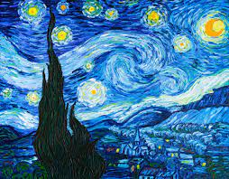
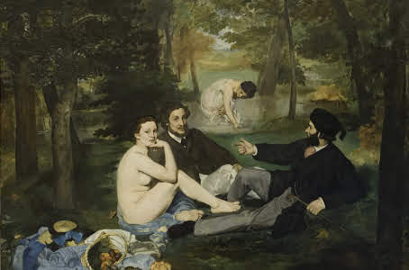

The Starry Night
by Vincent van Gogh

The Starry Night is an oil on canvas painting by Dutch Post-Impressionist painter Vincent van Gogh. Painted in June 1889, it depicts the view from the east-facing window of his asylum room at Saint-Rémy-de-Provence, just before sunrise, with the addition of an imaginary village.[1][2][3] It has been in the permanent collection of the Museum of Modern Art in New York City since 1941, acquired through the Lillie P. Bliss Bequest. Widely regarded as Van Gogh's magnum opus,[4][5] The Starry Night is one of the most recognized paintings in Western art.
1989
73.7 cm × 92.1 cm (28.7 in × 36+1⁄4 in)
Museum of Modern Art, New York City
Related Paintings


Reviews
Love this painting
mike
woodblock print by the Japanese ukiyo-e artist Hokusai.
It's Okay
John Doe
The Great Wave off Kanagawa, also known as The Great Wave or simply The Wave, is a woodblock print
Home| Artists| Artworks| About Us|
Search
Copyright @ 2021, My Sample Art Store